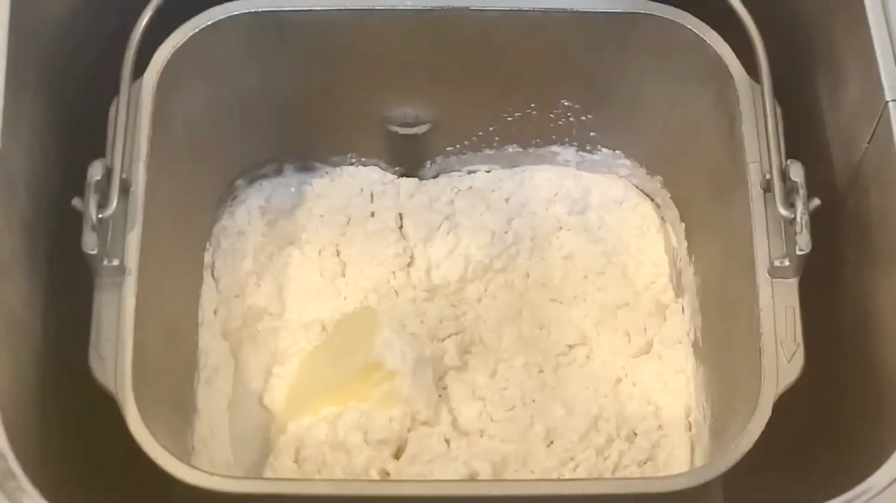
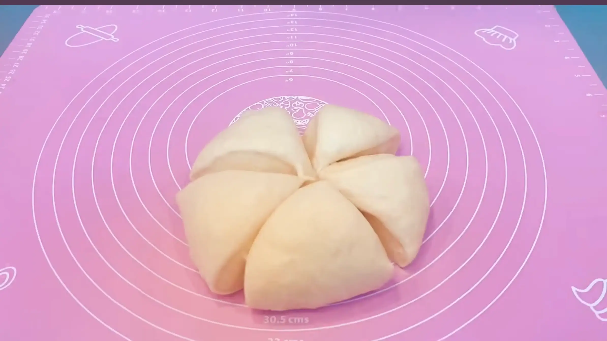
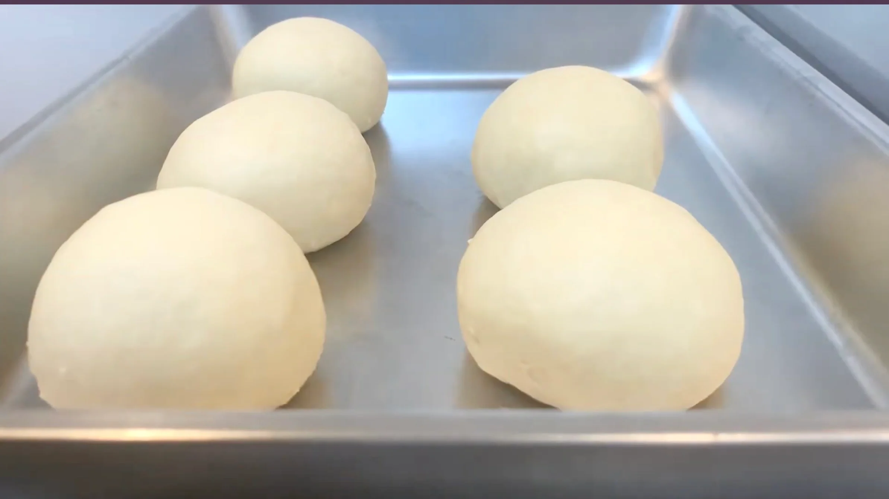
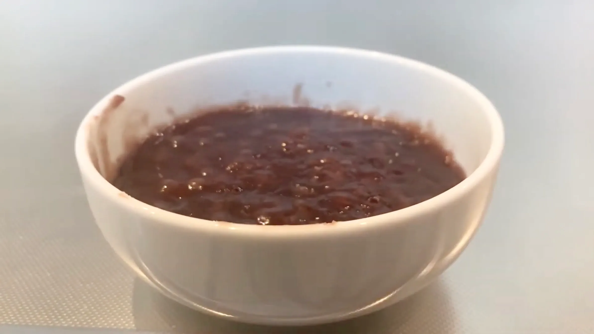
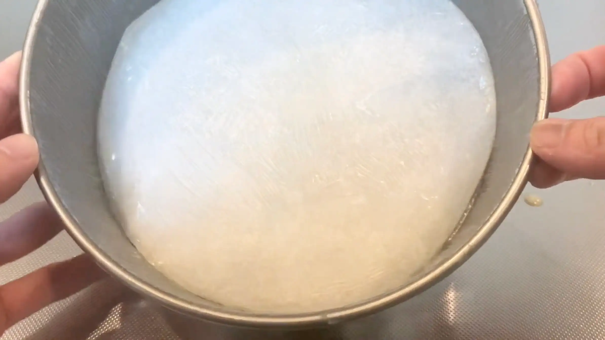
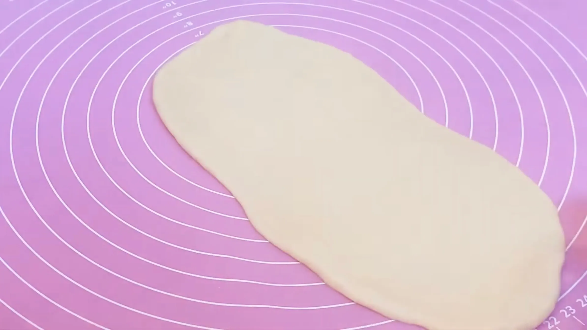
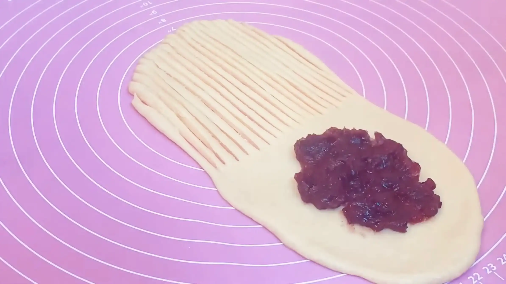
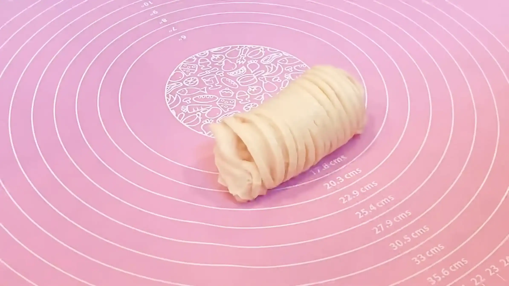
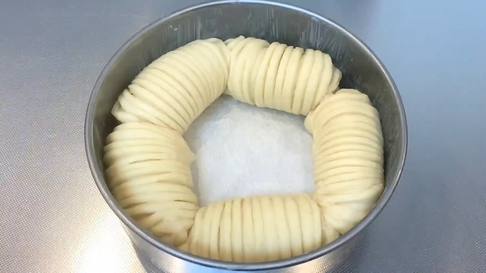
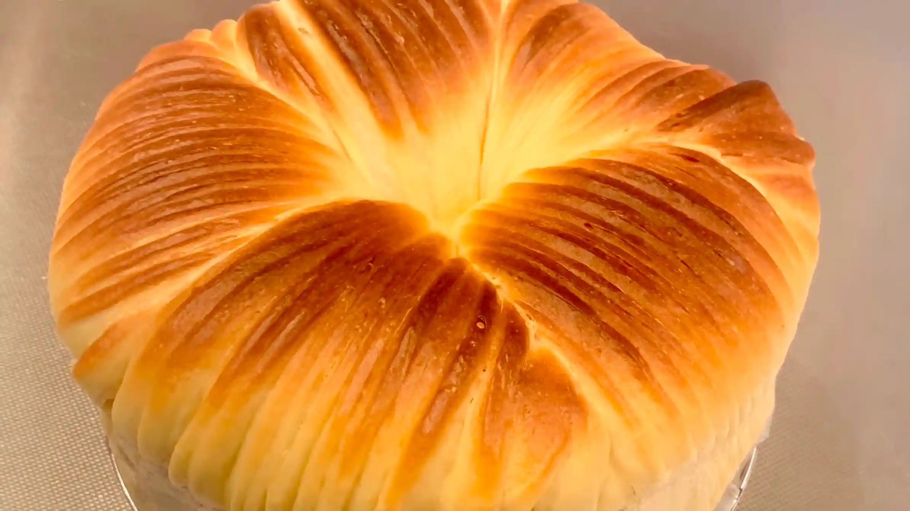

材料
※粉量を変えると自動計算されます
生地
フィリング・仕上げ
型
作り方
生地
STEP 1
ホームベーカリーで生地を作る
ホームベーカリーに材料をセットして「生地コース」を選べば、生地作りから一次発酵までお任せできます。コースが終わったら、次の作業に進みます。
ホームベーカリーに材料をセットして「生地コース」を選べば、生地作りから一次発酵までお任せできます。コースが終わったら、次の作業に進みます。

STEP 2
生地を取り出し、5分割する
目分量で分割してもOKですが、スケールで量って分割することで、均一な焼き上がりになると同時に、大きさが揃うので見た目も綺麗な仕上がりになります。
目分量で分割してもOKですが、スケールで量って分割することで、均一な焼き上がりになると同時に、大きさが揃うので見た目も綺麗な仕上がりになります。

STEP 3
生地を丸めて、ラップをして常温で15分おく
分割した生地は、表面がなめらかになるように軽く丸めておきます。ここで生地を休ませることで、次の工程で生地を伸ばしやすくなります。
分割した生地は、表面がなめらかになるように軽く丸めておきます。ここで生地を休ませることで、次の工程で生地を伸ばしやすくなります。

STEP 4
あんこをレンジ600Wで1分ずつチンし、様子を見ながら水分を飛ばす
あんこの水分が多いままだと、成形するときに生地からはみ出したり、焼成中に流れ出たりしやすくなります。短時間ずつ加熱して混ぜながら、ヘラで扱える程度の適度な硬さになるまで水分を飛ばします。
あんこの水分が多いままだと、成形するときに生地からはみ出したり、焼成中に流れ出たりしやすくなります。短時間ずつ加熱して混ぜながら、ヘラで扱える程度の適度な硬さになるまで水分を飛ばします。

STEP 5
型にバターを塗る
バターを塗っておくことで生地が型にくっつきにくくなり、焼きあがりに取り出しやすくなります。塗り残しがないよう、全体に薄く均一に広げます。（画像ではオーブンシートを敷いていますが、敷かずにバターを塗ってもOKです）
バターを塗っておくことで生地が型にくっつきにくくなり、焼きあがりに取り出しやすくなります。塗り残しがないよう、全体に薄く均一に広げます。（画像ではオーブンシートを敷いていますが、敷かずにバターを塗ってもOKです）

STEP 6
生地を縦25㎝×横10㎝の長方形に伸ばす
生地は一度に強く伸ばさず、真ん中から少しずつ伸ばしていきます。ここで生地の厚みを揃えておくと、仕上がりが綺麗になります。
生地は一度に強く伸ばさず、真ん中から少しずつ伸ばしていきます。ここで生地の厚みを揃えておくと、仕上がりが綺麗になります。

STEP 7
上半分に15本程切れ目を入れ、下半分にあんこをのせる（[動画 03:47]）
スケッパーを使い、生地が千切れてしまわないよう丁寧に切れ込みを入れます。あんこは巻いた時に厚みが揃うよう、平らにのせます。
スケッパーを使い、生地が千切れてしまわないよう丁寧に切れ込みを入れます。あんこは巻いた時に厚みが揃うよう、平らにのせます。

STEP 8
生地の両端を折りたたみ、くるくる巻いてあんこを包む（[動画 04:05]）
あんこをのせた側（下側）から巻いていきます。
あんこをのせた側（下側）から巻いていきます。

STEP 9
生地を型に入れ、ラップをして常温で60分おく
生地のとじ目が下になるよう型に入れ、ひとまわり大きくなるまで二次発酵させます。発酵時間は室温や生地の温度によって変わるため、時間は目安とし、生地の膨らみ具合を確認してください。
生地のとじ目が下になるよう型に入れ、ひとまわり大きくなるまで二次発酵させます。発酵時間は室温や生地の温度によって変わるため、時間は目安とし、生地の膨らみ具合を確認してください。

STEP 10
オーブンを180℃で予熱する
焼成温度までしっかり予熱しておくことで、生地を入れた瞬間から安定して焼き始められます。我が家は大体15分くらいで予熱が完了しますが、ご家庭のオーブンによって仕様が異なりますので、時間は目安としてご準備ください。
焼成温度までしっかり予熱しておくことで、生地を入れた瞬間から安定して焼き始められます。我が家は大体15分くらいで予熱が完了しますが、ご家庭のオーブンによって仕様が異なりますので、時間は目安としてご準備ください。
STEP 11
表面に牛乳を塗り、オーブン180℃で25分焼く
牛乳を塗ることで、表面にきれいな焼き色がつきやすくなります。卵液ほど濃く色づかず、やわらかく自然な焼き色に仕上がります。焼き時間や温度は目安とし、ご家庭のオーブンによってご調整ください。（途中表面が焦げそうな場合は、アルミホイルを被せてください。）
牛乳を塗ることで、表面にきれいな焼き色がつきやすくなります。卵液ほど濃く色づかず、やわらかく自然な焼き色に仕上がります。焼き時間や温度は目安とし、ご家庭のオーブンによってご調整ください。（途中表面が焦げそうな場合は、アルミホイルを被せてください。）

動画でチェック
おいしく作るためのワンポイントコラム
こんにちは、おなおドーナツです！
今回は、まるで毛糸玉のような見た目がとっても可愛い『ウールロールパン』をおうちで作っていきます。ふんわり柔らかい生地の中に、あんこをたっぷりと詰め込みました。型を使ってきれいに、極上の柔らかさに焼き上げるための3つのコツをまとめました。
① 仕上がりに差がつくコツ
パンを美しく仕上げるには、焼き上がりのバランスが肝心です。そのため、1次発酵が終わり生地を分割する際は、目分量ではなくスケールできっちり重さを量るのがポイント。それぞれの大きさを揃えることで、型の中で均等に膨らみ、多少形が歪になっていてもバランスが整った見た目に仕上がります。また、焼きムラを防ぐ効果もあり、全体のビジュアルが綺麗に整います。
② ウール模様を綺麗に出すコツ
特徴的な毛糸玉の模様をくっきりと出すために、生地を25cmに細長く伸ばしたら、手前半分に細かく縦の切れ目をしっかり深めに入れるのがコツです。切れ目が浅いと二次発酵や焼成の段階で線が同化して消えてしまうため、1本ずつ丁寧に、しっかり入れて行きます。そうすることで、焼き上がったときに繊細なウール模様が美しく浮き上がります。
③ 表情が変わるツヤ出し液の違い
焼く直前に表面に塗るツヤ出し液（ドリュール）は、材料によって焼き上がりの表情がガラリと変わります。卵液を塗ると高級感のある鮮やかなツヤと深い焼き色がつき、牛乳を塗ると光沢が抑えられたマットで優しい質感に仕上がります。どちらが良いという決まりはありませんので、出したい雰囲気に合わせてお好みで選ぶのがおすすめです。今回は、毛糸の柔らかいニュアンスを引き立てるために牛乳を使ってマットに仕上げています。
型の中でむぎゅむぎゅに膨らんだパンは本当に可愛いですね！ちぎった瞬間からあふれるあんこと、ほんのり甘くふわふわな生地の組み合わせは格別な美味しさ。ぜひ、わくわくするパン作りの時間を一緒に満喫しましょう！
今回は、まるで毛糸玉のような見た目がとっても可愛い『ウールロールパン』をおうちで作っていきます。ふんわり柔らかい生地の中に、あんこをたっぷりと詰め込みました。型を使ってきれいに、極上の柔らかさに焼き上げるための3つのコツをまとめました。
① 仕上がりに差がつくコツ
パンを美しく仕上げるには、焼き上がりのバランスが肝心です。そのため、1次発酵が終わり生地を分割する際は、目分量ではなくスケールできっちり重さを量るのがポイント。それぞれの大きさを揃えることで、型の中で均等に膨らみ、多少形が歪になっていてもバランスが整った見た目に仕上がります。また、焼きムラを防ぐ効果もあり、全体のビジュアルが綺麗に整います。
② ウール模様を綺麗に出すコツ
特徴的な毛糸玉の模様をくっきりと出すために、生地を25cmに細長く伸ばしたら、手前半分に細かく縦の切れ目をしっかり深めに入れるのがコツです。切れ目が浅いと二次発酵や焼成の段階で線が同化して消えてしまうため、1本ずつ丁寧に、しっかり入れて行きます。そうすることで、焼き上がったときに繊細なウール模様が美しく浮き上がります。
③ 表情が変わるツヤ出し液の違い
焼く直前に表面に塗るツヤ出し液（ドリュール）は、材料によって焼き上がりの表情がガラリと変わります。卵液を塗ると高級感のある鮮やかなツヤと深い焼き色がつき、牛乳を塗ると光沢が抑えられたマットで優しい質感に仕上がります。どちらが良いという決まりはありませんので、出したい雰囲気に合わせてお好みで選ぶのがおすすめです。今回は、毛糸の柔らかいニュアンスを引き立てるために牛乳を使ってマットに仕上げています。
型の中でむぎゅむぎゅに膨らんだパンは本当に可愛いですね！ちぎった瞬間からあふれるあんこと、ほんのり甘くふわふわな生地の組み合わせは格別な美味しさ。ぜひ、わくわくするパン作りの時間を一緒に満喫しましょう！


毛糸玉のような繊細な模様が美しい『ウールロールパン』のレシピです！生地の中にしっとりとしたあんこを包み込み、型を使ってふんわりちぎりパン風に焼き上げます。コラムでは「仕上がりに差がつくコツ」「ウール模様を綺麗に出すコツ」「表情が変わるツヤ出し液の違い」の3つのポイントをご紹介します。